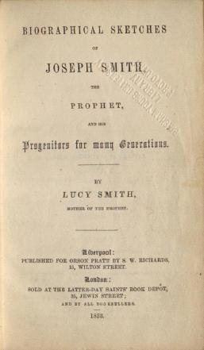
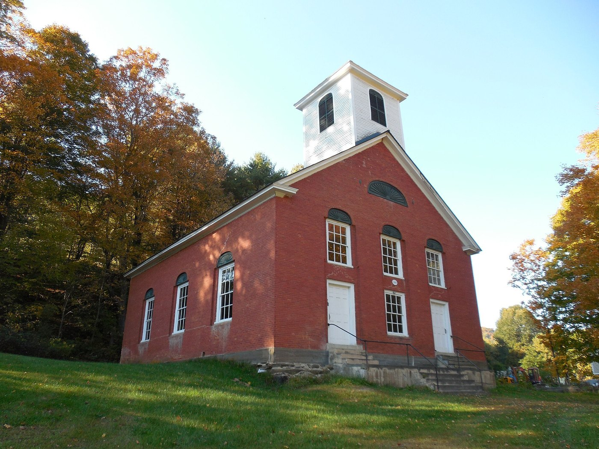

Ask, and it shall be given you; seek, and ye shall find; knock, and it shall be opened unto you.
Matthew 7:7
Let not your heart be troubled: ye believe in God, believe also in me.
John 14:1
“My Wife, My Wife”
In the winter of 1802, in the small Vermont town of Randolph, a young mother lay in bed and listened to her own breathing.

Lucy Mack Smith was about twenty-seven. She had two little boys, Alvin and Hyrum. Six months after the family moved to Randolph, she caught a heavy cold that settled into her lungs. A “hectic fever set in,” she remembered, “and the physician pronouned my case to be, confirmed consumption.”1 It was the same disease that had killed her sisters Lovisa and Lovina.
She grew so weak that she “could scarcely endure, even a foot fall upon the floor.” Her mother came to nurse her, and no one was allowed to speak in the room above a whisper. One day a Methodist exhorter called. His ordinary knock at the door shook her so badly that it took a long time for her nerves to settle. He sat in silence by the bed, and Lucy was afraid he would ask whether she was ready to die. She knew she was not. “There appeared to be a dark and lonesome chasm between me and the Savior,” she said, “which I dare not attempt to pass.”2
After the visitor left, her husband came to the bed and took her hand. “Oh Lucy! my wife, my wife! you must die!” he said. “The doctors have given you up; and all say you cannot live.”3
That night Lucy prayed as she never had. She “begged and plead” with the Lord to spare her, so that she could raise her children and comfort her husband. Her thoughts swung between heaven and her babies. Then, she said, “during the night I made a solemn covenant with God: that, if he would let me live, I would endeavor to serve him according to the best of my abilities.”4
Shortly after, she heard a voice:
Seek and ye shall find, knock and it shall be opened unto you—let your heart be comforted, ye believe in God, beleive also in me.5
The words were from the Sermon on the Mount and from the Gospel of John, two passages she knew. They came to her as a personal answer.
In a few moments her mother came into the room, looked at her and exclaimed, “Lucy, you are better.” Lucy found that she could speak again. “Yes, mother,” she answered, “the Lord will let me live, if I am faithful to the promise which I made him.”6
She did live, and she spent the rest of her life trying to keep that promise. To understand what it cost her, and what it would mean for her children, we have to go back to her wedding.
A Wedding Gift
Lucy Mack and Joseph Smith were married in Tunbridge, Vermont, on January 24, 1796. She was twenty, and he was twenty-four.7
Soon after the wedding, the couple set out to visit Lucy’s parents. Lucy’s brother Stephen and his business partner, John Mudget, saw them off. Lucy remembered their conversation word for word, or close to it. “Well,” said Mr. Mudget, “Lucy ought to have something worth naming, and I will give her just as much as you will.” “Done,” said Stephen, “I will give her 500 dollars in cash.” “Good,” said the other, “and I will give her 500 dollars more.”8
It was a large sum for a farm couple in 1796. Lucy laid the check aside, since she had enough of her own to furnish a house. The young couple went back to Tunbridge, where Joseph owned “a handsome farm,” and for about six years they lived there “tilling the earth for livlihood.”9
Their first child, a son, did not live long enough to be named. Alvin was born on February 11, 1798. Hyrum followed on February 9, 1800, and a daughter, Sophronia, on May 16, 1803.10 Lucy’s history lists them in a family record, with the dates of their births, marriages and deaths. Reading it now, knowing what lay ahead for several of those children, is not easy.
In 1802 the Smiths rented out their farm and moved to Randolph to open a store. It was there that Lucy fell ill.
“What Man Can Neither Give nor Take Away”
When Lucy recovered, she went looking for someone to teach her how to keep her covenant.
She called on a deacon she regarded as “exceedingly pious,” expecting to hear him praise God for her recovery. Instead the whole household fussed over her comfort: “Oh! Mrs. Smith has come, help her in—run, build a fire—make the room warm—fill the tea kettle—get the great-arm chair.” Not a word about Christ. Lucy went home “sorrowful and disappointed.”11
She went to hear a well-known preacher at the Presbyterian meetinghouse, listening with “deep attention.” She came away convinced “that he neither understood nor appreciated the subject upon which he spoke.” She was not bitter, but she reached a hard conclusion: “I said in my heart: there was not then upon earth the religion, which I was seeking after.”12
That might have been the end of her search. Instead it became the beginning of a new one. She resolved, she said, “taking Jesus and disciples for my guide, to endeavor to obtain from God, what man can neither give nor take away.” She would listen to every preacher and read every book she could, “but the Bible should be my guide to life and Salvation.”13
Years later, Lucy decided that she ought to be baptized. She found a minister “who was willing to baptize me, without compelling me to join any religious denomination,” and she received the ordinance. Then she went on reading her Bible and waiting.14
Baptism in those years usually meant joining the congregation that performed it. Lucy wanted the ordinance without the membership, and she had to look for a minister willing to give it on those terms. It was an unusual request, and it tells us how seriously she took both halves of her belief: that baptism mattered, and that no church she knew had a clear claim to be Christ’s.
That sentence is worth reading twice. Lucy Mack Smith believed in Christ and wanted His ordinance, but she could not find a church she felt sure was His. She was not alone. Many Americans of her time felt the same way. Lucy’s way of living with the question would shape her children far more than any sermon.
The Ginseng Venture
Meanwhile, Joseph’s store in Randolph was doing well, and he saw a chance to do better.
He learned that “chrystalized Gin seng root, bore a very high price in China.” Ginseng grew wild in the Vermont woods. Joseph put all his money into buying the root and preparing it for market. A merchant named Stevens, from nearby Royalton, offered him three thousand dollars for the lot. Joseph refused, since the offer was only about two-thirds of what he believed it was worth. He went to New York City and arranged with a ship’s captain to sell the ginseng in China and bring him the proceeds.15
Stevens followed him to New York, found the same ship, and sent his own son along with some ginseng of his own. When the ship came back, young Stevens told Joseph a sad story: the sale had failed, and all he had to show for it was a small chest of tea.
The truth came out by accident. Lucy’s brother Stephen visited the younger Stevens, who had set up his own ginseng operation and was, as Lucy put it, “considerably intoxicated.” Stephen casually asked how much Joseph’s venture had brought. Stevens led him to a trunk, opened it and said, “there, sir, are the proceeds of Mr. Smith’s Ginseng.” It was full of silver and gold.16
Stephen rode for Randolph that same night. But when Stevens sobered up, he guessed what he had done. He dismissed his workers, called his carriage and “fled with his cash to Canada.” Joseph chased him for a while and then gave up. Lucy never heard of the man again.17
We have only Lucy’s side of this story, told forty years later, and no court record or letter from Stevens survives to check it against. But the outline is consistent with what historians know of the family’s sudden poverty after 1803, and Lucy tells it without self-pity.18
The loss was ruinous. On top of it, Joseph discovered about two thousand dollars in bad debts, and he still owed eighteen hundred dollars to merchants in Boston for store goods. The Smiths did what honest people in their position could do. They sold their Tunbridge farm, worth about fifteen hundred dollars, for eight hundred to raise money quickly. Then Lucy brought out the wedding check she had never cashed. The two sums together paid the Boston debt.19
From that point on, the Smiths would never again own land free and clear for long. They would rent, work for others and start over, again and again. But they paid what they owed.
A Visit from Jason
During these lean years on the Tunbridge farm, Lucy’s oldest brother, Jason Mack, came to see them. He brought with him “a young man by the name of William Smith, a friendless orphan, whom he had adopted.” Jason asked the Smiths to keep the boy for a while so that he could go to school. They did, for six months, until Jason came back for him.20
Lucy’s description of her brother on that journey is one of the loveliest passages in her history. Jason had bought a stock of store goods as presents for his mother and sisters. But “on his way he found so many objects of charity, that he gave, not only all his goods, but most of his cash away before he arrived at his father’s house.” Once he met a widow with six children, newly bereaved and destitute. He gave her fifteen dollars and “an entire suit of clothes for herself, and each of her children.”21
Jason went back to New Brunswick, where he gathered poor families onto his land, planned their work and sailed their produce to market in his own schooner. Lucy never saw him again. Twenty years later a single letter came, full of faith, describing the healings he had witnessed “by the prayer of faith.” Not long after that, word came that Jason, his wife and their oldest son had died.22
The Smiths had little to spare when Jason came. They took in his orphan anyway. Kindness of that kind, to strangers and to the poor, runs through Lucy’s history like a thread. It would mark her household for the rest of her life.
Two Trees
While the family was living on the Tunbridge farm, Lucy began attending Methodist meetings, and Joseph went with her to please her. His family did not like it. Lucy says that when his oldest brother heard of it, there was so much displeasure that Joseph decided it was “hardly worth our while to attend meetings” anymore. It would “prove but little advantage to us,” he told her, and it upset his relatives.23

Lucy was hurt, but she did not argue. “I retired to a grove not far distant,” she wrote, “and prayed to the Lord in behalf of my husband: that the true gospel might be presented to him; and, that his heart might be softened, so as to recieve it.”24
Readers who know where this story is going may notice the grove. Years later, Lucy’s son Joseph would also go into the woods to pray. Lucy does not draw the connection. She simply tells us that she went home depressed, went to bed, and dreamed.
In her dream she stood in a beautiful meadow near their house. A clear stream ran through it, and beside the stream stood two tall trees. A bright light surrounded one of them, “like a belt of burnished gold.” When a gentle breeze passed, that tree “bent gracefully before the wind,” and its branches moved as if in joy. The other tree “stood erect and fixed as a pillar of marble.” No matter how hard the wind blew, “not a leaf was stirred, not a bow was bent.”25
The interpretation, she said, was given to her. The stiff tree was her husband’s oldest brother, Jesse. The bending tree was her husband. The breeze was “the pure and undefiled gospel of the son of God,” which Jesse would always resist. But Joseph, “when Joseph should be more advanced in life,” would “hear the pure gospel, receive it with his whole heart, and rejoice therein.”26
It helps to remember the world Lucy and Joseph lived in. Vermont at the turn of the nineteenth century was full of religious variety and religious argument. The old Congregational churches of New England, supported by town taxes, still stood on the village greens. Methodist circuit riders and Baptist preachers traveled from farm to farm, holding meetings in homes and barns. Universalists like Asael taught that God would save everyone. Many families, like the Smiths, were divided among these views. Many people did not join any church, not because they did not believe, but because they could not decide which church was right.27
Lucy and her husband were different in temperament. She was drawn to meetings and longed for a church home. He was wary of them and distrusted creeds that seemed to divide Christians. Both of them read the Bible. Both of them prayed. Neither of them was willing to pretend to be sure.
Lucy recorded this dream more than forty years after she had it, knowing how things turned out. Readers can weigh it as they wish. What it shows beyond doubt is how she saw her husband. He was not a scoffer. He was a searcher who had not yet found what he was looking for.
A Son Named Joseph
After selling the Tunbridge farm, the family moved to nearby Royalton for a few months and then to Sharon, in Windsor County, Vermont. There Joseph Sr. rented a farm from Lucy’s father, Solomon Mack. He farmed it in summer and taught school in winter, and slowly, Lucy wrote, “our circumstances gradually improved, until we found ourselves quite comfortable again.”28
It was in Sharon that the family’s fifth child was born. “Meantime we had a son whom we called Joseph, after the name of his father,” Lucy wrote. “He was born December 23d, 1805; whom I shall speak more particularly of, by and by.”29
That is all she says about the birth. Picture a small farmhouse two days before Christmas, the ground frozen and the hills white, a midwife or a neighbor woman at the bedside and three children waiting in the next room for news.† Lucy, writing in 1845 after both Joseph and Hyrum had been killed, chose not to linger. She would have much more to say about her son “by and by.”
Today a tall granite obelisk stands on that Sharon hillside. It was dedicated on December 23, 1905, the hundredth anniversary of the birth, and its polished granite shaft is 38½ feet tall, one foot for each year of Joseph Smith’s life.30 In 1805 there was nothing to mark the place but a rented farmhouse, a family that had already lost a fortune, and a schoolteacher father who would walk out on winter mornings to teach other people’s children.
The family kept moving: back to Tunbridge, where Samuel Harrison was born on March 13, 1808, and then to Royalton, where another son, Ephraim, was born on March 13, 1810. Ephraim lived only eleven days. A year later, on March 13, 1811, William was born.31 Three sons born on the same day of the year: Lucy noted the dates without comment.
The Box
About this time, Lucy says, her husband’s mind “became much excited upon the subject of religion.” Yet “he would not subscribe to any particular system of faith, but contended for the ancient order, as established by our Lord and Saviour, Jesus Christ, and his Apostles.”32
One night he went to bed thinking about “the confusion and discord that reigned in the religious world,” and he had a dream. He told it to Lucy the next morning, and she recorded it in his words.
He was traveling through an open, barren field. In every direction he could see “nothing save dead fallen timber: not a vestige of life.” There was a “death-like silence.” With him was an attendant spirit, and Joseph asked what this place was. The guide answered: “this field is the world which now lieth inanimate and dumb in regard to the true religion, or plan of salvation.” If he traveled on, he would find a box on a log, and its contents would “make you wise, and give unto you wisdom and undertstanding.”33
Joseph found the box, raised the lid and began to taste what was inside. At once beasts of every kind rose up around him, “tearing the earth, tossing their horns, and bellowing in the most terrifick manner.” He had to drop the box and run. “Yet, in the midst of all this terror,” he said, “I was perfectly happy; though I awoke, trembling with fear.”34
From then on, Lucy wrote, he was “more confirmed than ever” that none of the churches around him knew any more about the kingdom of God than people who professed no religion at all.35
It is a striking picture of a man’s inner life. Joseph Smith Sr. was a Vermont farmer and schoolteacher with no formal theology. Yet in his dream he saw the religious world of his day as a field of dead timber, silent and lifeless. He saw that there was wisdom to be found. He saw that reaching for it would bring fierce opposition. And he saw that, even in the middle of that opposition, he could be “perfectly happy.” His son would one day describe very much the same experience while awake.
In 1811 the family moved across the Connecticut River to Lebanon, New Hampshire. There Joseph Sr. had another dream. He walked a narrow path beside a stream, holding to a rope that ran along the bank, and came to a tree whose white fruit was “delicious beyond description.” “I cannot eat this alone,” he said in the dream, “I must bring my wife and children, that they may partake with me.” He brought them, and they ate and praised God together, while people in “a spacious building” across the valley “pointed the finger of scorn at us.”36 Readers of the Book of Mormon will notice how closely this resembles the dream of the prophet Lehi in its opening pages. Lucy, writing years after that book was published, recorded the dream as her husband’s and left the comparison to her readers.
What They Carried
Look at this family in 1811. They had lost a fortune to a dishonest partner, sold their farm at a loss and paid their debts. They had buried two infant sons. They had moved at least six times in fifteen years. They had six living children, a rented farm, and, for the moment, enough to eat.
They also had something harder to measure. Lucy had made a covenant with God and was keeping it the only way she knew: by reading the Bible, praying, and refusing to settle for less than she believed Christ’s church should be. Joseph Sr. had dreamed of a dead world, a box of wisdom, and a tree whose fruit he could not bear to eat alone. Neither of them had found the church they wanted. Neither of them had stopped looking. And without quite meaning to, they were teaching their children by example: that God answers prayer, that a covenant is to be kept, that debts are to be paid, that an orphan at the door is to be fed, and that it is better to keep searching honestly than to settle for an answer you do not believe.
In Lebanon, for the first time in years, things were going well. The Smiths sent Hyrum to an academy in nearby Hanover and the younger children to a common school. “We doubled our diligence,” Lucy remembered, and “were greatly blessed in our labors.”37 It would not last.
Their son Joseph was five years old. In a few years he would face a crisis that tested the whole family and nearly cost him his leg. And in a few years more, he would take up his parents’ question as his own.
Key: † marks a sentence or passage of imagined connective detail; the note explains what is documented. Full citations and verification status are in 03-sources.md. Lucy Mack Smith is quoted from the 1845 fair copy of her history (JSP), with original spelling.
Notes
-
Lucy Mack Smith, History, 1845, 39, JSP, https://www.josephsmithpapers.org/paper-summary/lucy-mack-smith-history-1845/46. Lucy says this happened after they had lived in Randolph “but six months”; they moved there in 1802. Her age is reckoned from the JSP birth date (8 July 1775). ↩
-
Lucy Mack Smith, History, 1845, 39. ↩
-
Lucy Mack Smith, History, 1845, 40, JSP, https://www.josephsmithpapers.org/paper-summary/lucy-mack-smith-history-1845/47. ↩
-
Lucy Mack Smith, History, 1845, 40. ↩
-
Lucy Mack Smith, History, 1845, 40. The words combine Matthew 7:7 and John 14:1 (KJV). Original spelling retained. ↩
-
Lucy Mack Smith, History, 1845, 40. ↩
-
JSP, Joseph Smith Pedigree Chart, https://www.josephsmithpapers.org/back/joseph-smith-pedigree-chart; JSP biographies of Joseph Smith Sr. (b. 12 July 1771) and Lucy Mack Smith (b. 8 July 1775). ↩
-
Lucy Mack Smith, History, 1845, 38, JSP, https://www.josephsmithpapers.org/paper-summary/lucy-mack-smith-history-1845/45. Punctuation of the dialogue is lightly regularized; the words are Lucy’s. ↩
-
Lucy Mack Smith, History, 1845, 38. ↩
-
Lucy Mack Smith, History, 1845, 32 (family register), JSP, https://www.josephsmithpapers.org/paper-summary/lucy-mack-smith-history-1845/39. ↩
-
Lucy Mack Smith, History, 1845, 40–41, JSP, https://www.josephsmithpapers.org/paper-summary/lucy-mack-smith-history-1845/48. Lucy names him “Deacon Davis.” ↩
-
Lucy Mack Smith, History, 1845, 41. ↩
-
Lucy Mack Smith, History, 1845, 41–42, JSP, https://www.josephsmithpapers.org/paper-summary/lucy-mack-smith-history-1845/49. ↩
-
Lucy Mack Smith, History, 1845, 42. Lucy does not name the minister or give a date. ↩
-
Lucy Mack Smith, History, 1845, 42–43, JSP, https://www.josephsmithpapers.org/paper-summary/lucy-mack-smith-history-1845/49. See also Bushman, Rough Stone Rolling, ch. 1. ↩
-
Lucy Mack Smith, History, 1845, 43–44, JSP, https://www.josephsmithpapers.org/paper-summary/lucy-mack-smith-history-1845/51. ↩
-
Lucy Mack Smith, History, 1845, 44. ↩
-
Bushman, Rough Stone Rolling, ch. 1, relies on Lucy for the ginseng episode; no independent record of it has been identified for this draft. See
03-sources.md. ↩ -
Lucy Mack Smith, History, 1845, 44–45, JSP, https://www.josephsmithpapers.org/paper-summary/lucy-mack-smith-history-1845/52. ↩
-
Lucy Mack Smith, History, 1845, 45, JSP, https://www.josephsmithpapers.org/paper-summary/lucy-mack-smith-history-1845/52. ↩
-
Lucy Mack Smith, History, 1845, 45–46, JSP, https://www.josephsmithpapers.org/paper-summary/lucy-mack-smith-history-1845/53. ↩
-
Lucy Mack Smith, History, 1845, 46–48, including Jason Mack to Solomon Mack Jr., June 30, 1835. ↩
-
Lucy Mack Smith, History, 1845, 48–49, JSP, https://www.josephsmithpapers.org/paper-summary/lucy-mack-smith-history-1845/55. The manuscript says “my longer,” which we read as “any longer”; see
03-sources.md. ↩ -
Lucy Mack Smith, History, 1845, 49, JSP, https://www.josephsmithpapers.org/paper-summary/lucy-mack-smith-history-1845/56. ↩
-
Lucy Mack Smith, History, 1845, 49–50. ↩
-
Lucy Mack Smith, History, 1845, 50–51, JSP, https://www.josephsmithpapers.org/paper-summary/lucy-mack-smith-history-1845/57. ↩
-
Church History Topics, “Christian Churches in Joseph Smith’s Day,” https://www.churchofjesuschrist.org/study/history/topics/christian-churches-in-joseph-smiths-day; Bushman, Rough Stone Rolling, ch. 1. This paragraph is the author’s summary of the religious setting. ↩
-
Lucy Mack Smith, History, 1845, 51, JSP, https://www.josephsmithpapers.org/paper-summary/lucy-mack-smith-history-1845/58. ↩
-
Lucy Mack Smith, History, 1845, 51. † The farmhouse scene (frozen ground, attendants, children waiting) is imagined. The date and place are documented; Lucy describes nothing of the birth itself. ↩
-
Proceedings at the Dedication of the Joseph Smith Memorial Monument, at Sharon, Windsor County, Vermont, December 23rd, 1905 (1906), Internet Archive, https://archive.org/details/proceedingsatded00salt. Height (38½ feet, one foot per year): Church historic sites, “Joseph Smith Birthplace Memorial,” https://history.churchofjesuschrist.org/exhibit/historic-sites/vermont/joseph-smith-birthplace/birthplace; Liahona, Dec. 2002. ↩
-
Lucy Mack Smith, History, 1845, 32, 51. Lucy’s register gives Ephraim’s death as “Mar. 24th 1820,” evidently a slip for 1810; the JSP Pedigree Chart gives 24 March 1810. See
03-sources.md. ↩ -
Lucy Mack Smith, History, 1845, 52, JSP, https://www.josephsmithpapers.org/paper-summary/lucy-mack-smith-history-1845/59. ↩
-
Lucy Mack Smith, History, 1845, 52. Original spelling (“undertstanding”) retained. ↩
-
Lucy Mack Smith, History, 1845, 52–53, JSP, https://www.josephsmithpapers.org/paper-summary/lucy-mack-smith-history-1845/60. ↩
-
Lucy Mack Smith, History, 1845, 53. ↩
-
Lucy Mack Smith, History, 1845, 53–55, JSP, https://www.josephsmithpapers.org/paper-summary/lucy-mack-smith-history-1845/60. Compare 1 Nephi 8 in the Book of Mormon. ↩
-
Lucy Mack Smith, History, 1845, 55–56, JSP, https://www.josephsmithpapers.org/paper-summary/lucy-mack-smith-history-1845/63. ↩